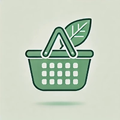
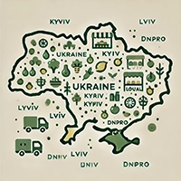
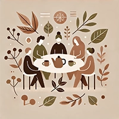

![На зображенні зображено яскраву й атмосферну сцену з екобазару в Україні. У центрі кадру — молода жінка з багаторазовими екоторбами в руках, усміхнена й задоволена покупками. Навколо неї — ряди зелених наметів, під якими фермери й продавці пропонують свіжі органічні продукти: овочі, фрукти, зелень, хліб, яйця, молочні пляшки, екотовари.
На передньому плані видно натуральні продукти в дерев’яних ящиках і кошиках, квіти, пляшки з екологічним пакуванням. Усі покупці мають власні багаторазові сумки або візки. Атмосфера базару — активна й тепла, люди спілкуються, сонце яскраво світить з-за будівлі у стилі старовинної української архітектури, над якою майорить синьо-жовтий прапор.
Загалом зображення створює відчуття екологічної свідомості, спільноти та задоволення від життя в стилі «еко».](img/ecobazar.webp)
Що таке екобазар?
![На зображенні зображено мінімалістичну іконку прилавку екобазару у стилі flat design. Стенд має зелену смугасту навісну тенту та стоїть на двох колесах, що створює образ мобільного ринку. На прилавку акуратно розміщені ящики з фруктами та овочами: ананас, яблука, апельсини, зелень тощо.
Іконка витримана у м’яких зелених тонах — символах природи, екологічності та спокою. Над прилавком розміщено маленький тризуб, що додає національного колориту та прив’язує зображення до України.
Це ідеальне зображення для візуалізації розділу про те, що таке екобазар або як символ самого ринку.](img/market.webp)
Екобазар — це ринок, на якому фермери, ремiсники та виробники продають свою продукцiю без посередникiв. Тут можна знайти:
- - органiчнi овочi та фрукти;
- - фермерськi сири i молочну продукцiю;
- - мед, горiхи, сухофрукти;
- - хлiб на заквасцi;
- - екотовари для дому: мило, засоби для прибирання, тканиннi торбинки та багато iншого.
Чому це важливо?
- Пiдтримка мiсцевих виробникiв — кошти залишаються в громадi.
- Менше пластику — продавцi часто використовують пакування, що розкладається або приймають власну тару вiд покупцiв.
- Здорова їжа — натуральнi продукти без пестицидiв, консервантiв i антибiотикiв.
Популярнi екобазари України
- Екобазар у Львовi (вул. Зелена) — зразок сталого пiдходу до споживання.
- ВДНГ у Києвi — щотижневий фермерський ярмарок i фестивалi екотоварiв.
- Made in Ukraine у Днiпрi — рiзноманiття локальної продукцiї вiд малих бiзнесiв.
Бiльше, нiж просто ринок
Екобазари часто перетворюються на платформи для спiлкування, лекцiй, воркшопiв i дегустацiй. Тут можна поспiлкуватися з виробниками, дiзнатися про походження продукту, а також вiдвiдати майстер-клас iз приготування здорової їжi чи виготовлення косметики.
Майбутнє за екотрендом

Сьогоднi екобазар — це стиль життя, вiдповiдальний вибiр та спосiб змiнити споживацькi звички. Зростаючий попит на якiсну продукцiю та етичне виробництво створює пiдгрунтя для розвитку сталої економiки в Українi.
Maecenas lacinia felis nec placerat sollicitudin. Quisque placerat dolor at scelerisque imperdiet. Phasellus tristique felis dolor.
Maecenas elementum in risus sed condimentum. Duis convallis ante ac tempus maximus. Fusce malesuada sed velit ut dictum. Morbi faucibus vitae orci at euismod. Integer auctor augue in erat vehicula, quis fermentum ex finibus.
Mauris pretium elit a dui pulvinar, in ornare sapien euismod. Nullam interdum nisl ante, id feugiat quam euismod commodo. Sed ultrices lectus ut iaculis rhoncus. Aenean non dignissim justo, at fermentum turpis. Sed molestie, ligula ut molestie ultrices, tellus ligula viverra neque, malesuada consectetur diam sapien volutpat risus. Quisque eget tortor lobortis, facilisis metus eu, elementum est. Nunc sit amet erat quis ex convallis suscipit. ur ridiculus mus.